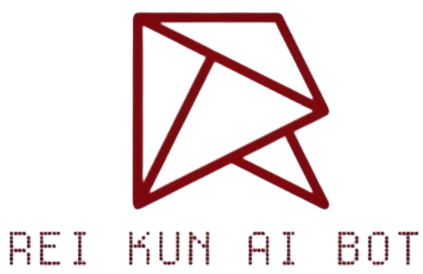

Everything I have built and keep running — 31 repositories, 10+ shipped systems. Public repos link out; private products are listed with their real scope, no source access. View all repositories →
Personal AI agent harness controlled from Discord or Telegram. Built for free hosts (HidenCloud etc.) — phone is the control panel. Includes /setup, Python sandbox + approval buttons, memory, files, skills, web search, terminal. Allow-list only.
Production Model Context Protocol server — 70+ tools behind one connection. GitHub (full access), sandboxes (Daytona / E2B / Horizon), HidenCloud, web, YouTube, Neural memory sub-agent, Google Workspace. Security-reviewed, allow-list dispatch. FastMCP on Horizon, auto-deploy on push.

High-performance Discord AI orchestrator with persistent persona, multi-model fallback (OpenRouter: DeepSeek / Llama 4 / GPT / Gemini), Code Doctor, resource hub, per-channel memory, hot-reload. Live and self-hosted on a Linux VPS.
Multi-model conversational chatbot MCP server — persistent threads, model routing + automatic fallback, background context compression, GitHub-backed shared artifacts. Deployed on Horizon.
Mobile-first research assistant plugin for Obsidian — bounded context (reads what it needs, never the whole vault), approval-gated edits, transparent prompts, MCP-compatible tool calling.
The full NiPlex product catalog — every product, in detail: architecture, tools, security models and deployment specs. Served as a GitHub Pages project site.
V1 marketing site for NiPlex-Harness — pure static build (docs pages, redirects, robots, sitemap), deployable on GitHub Pages and Cloudflare Pages.
Maintained forks feeding the ecosystem: hermes-agent (Nous Research stack) and OpenDots (CopilotKit) — plus opendots-host, the self-hosting launcher.
The memory layer: Neural-MCP sub-agent (ask_neural / log_to_neural over Adarshs-Stack, two auth layers), neural-chat capture bot (Discord + Telegram, 47+ tools in chat mode), Neural-OS second brain (React 19 + Convex).
Discord + Telegram capture bot — post in a section channel and the thought gets filed to Neural; message elsewhere and it is a full assistant with 47+ MCP tools. /setup creates the 8 sections.
The Hermes-based Telegram/Discord bot with Adarshs-Stack memory — the lineage the harness grew out of.
Self-hosted LLM gateway — Caddy + FreeLLMAPI on a free Wispbyte host — one stable OpenAI-compatible endpoint over free-tier providers.
FastMCP run_code server — disposable code execution with hard caps: 60 seconds, 1.5 GB.
Cron-driven reminder poller — the quiet background worker that fires scheduled reminders.
Deep product analyses: architecture trees, tool-category tables, security models, setup flows — the reference layer for the whole ecosystem.
Plans, decisions, coordination logs and the V1 harness site source — where the three-agent team coordinates.
Adarsh-Jaiswal (memory workspace) + the profile repo — agent.md is the source of truth for how AI agents treat NiPlex work.
Private development twins — dev-NiPlex-Harness, dev-NiPlex-MCP, Dev-obsidian-agentic-research, Hermes-backup — full source, experiments and AI-handover notes stay out of public repos by design.